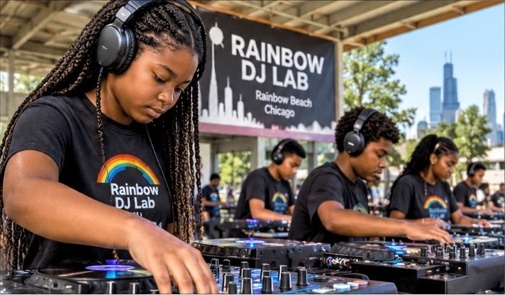

A free, year-round youth DJ laboratory turns music, technology and mentorship into an unconventional classroom on the South Side
By TAFARI MAKONNEN (pseudonym)The New York Times
CHICAGO — On the South Side of Chicago, where Lake Michigan meets a stretch of shoreline known as Rainbow Beach, a different kind of classroom is taking shape.
There are no rows of conventional desks. No spelling tests. No report cards measuring a student’s ability to memorize facts.
Instead, there are DJ controllers, headphones, laptops and music libraries — and the possibility that a young person who has never touched professional audio equipment might discover an entirely new direction for the future.
The Rainbow DJ Lab, a free youth education program of Ras Tafari Inc., a Chicago nonprofit, opens Tuesday, Jan. 12.
Continued on Page A10

The lab’s model gives each student a dedicated controller, so no one waits a turn to practice, experiment and make mistakes.
Mentors verify completed skills with passport stamps, and students move through at their own pace.
Visiting women DJs introduce students to career paths in an industry that has historically been male-dominated.
Continued from Page A1
The initiative, called the Rainbow DJ Lab, is a youth education program of Ras Tafari Inc., a Chicago nonprofit. Its premise is deceptively simple: give young people access to the tools of the music industry, surround them with experienced mentors and let them learn by doing.
The program is open to students in grades six through 12 and meets every Tuesday from 4 to 6 p.m. in the Rainbow Beach Park fieldhouse, starting Jan. 12. It runs all year, and a child can join on any Tuesday. Instead of a fixed term, students work through 14 Missions, organized around the seven colors of the rainbow, at their own pace.
Students are not expected to compete for grades. Instead, they build a personal skills passport, accumulating 42 individual skill achievements. Graduation means all 42 are stamped, followed by a final performance set.
The distinction matters. In a world where access to technology and creative opportunity is increasingly tied to economic advantage, the lab is built around the idea that young people should not have to own expensive equipment — or know someone in the music business — to get started.
The equipment is part of the education.
The model calls for 12 dedicated DJ controller stations, so that each student has an individual opportunity to practice, experiment and make mistakes without waiting for another student to finish.
That is a meaningful departure from the occasional demonstration-style music workshop, where students may spend more time watching an instructor than developing their own abilities. Here, the objective is participation.
Students learn the mechanics of mixing, beat matching, transitions, music selection and the technical operation of DJ equipment. They also encounter the less tangible skills required to perform: listening, timing, preparation, confidence and reading an audience.
Two resident instructors teach every class, and a guest DJ visits each week, including female professionals who can introduce students to different career paths and provide mentorship — particularly for girls interested in an industry that has historically been male-dominated.
The equipment gives them the opportunity to discover what they can become.
The larger ambition extends beyond learning how to play records. DJing sits at the intersection of music, technology, performance, entrepreneurship and digital production. A young person who learns to operate a controller may also become interested in audio engineering, event production, radio, music programming, sound design or starting a small entertainment business.
That makes the DJ booth an unusual but potentially powerful entry point into the creative economy.
Rainbow Beach is more than a convenient location. Situated along Chicago’s South Shore, the lakefront offers a setting with its own history, identity and community significance. The organizers envision a program that draws on that environment rather than importing a generic youth-development model.
The surrounding community is central to the concept. Experienced neighborhood DJs can serve as instructors and role models. Local restaurants can contribute meals and build relationships with participating families. Artists and cultural organizations can connect students with the broader creative community.
The program also plans to bring families together for a Rainbow Showcase, where students demonstrate what they have learned. For the organizers, that public presentation is not merely an end-of-course celebration. It is an opportunity for young people to experience what happens when preparation meets an audience.
One of the more interesting features of the Rainbow DJ Lab model is its approach to student assessment. Instead of conventional grades and examinations, students evaluate their own development while mentors verify completed skills through passport stamps. The seven-color structure gives students a visible way to track progress: each color contains two Missions, with six skill stamps associated with each color.
The approach is designed to accommodate different learning speeds. Because students join any Tuesday and move at their own pace, a missed week costs nothing. That flexibility may prove important for families balancing school, transportation, extracurricular activities and other responsibilities.
It also reflects a broader question confronting educators and youth-development organizations: How do you measure a student’s growth when the most important outcomes may be confidence, initiative, creativity and the willingness to take on something unfamiliar?
The lab is attempting to answer that question through hands-on learning.
The creative industries offer possibilities that traditional career counseling does not always adequately explain to young people. Behind a concert, a radio broadcast, a music festival or a recording session are technicians, programmers, sound engineers, producers, entrepreneurs and performers. Many of those careers require specialized skills, practical experience and access to professional equipment.
Yet access is not distributed equally. Programs such as the Rainbow DJ Lab are built on the proposition that introducing young people to professional tools early can help narrow that gap.
The challenge will be sustaining the equipment, instructors, partnerships and resources necessary to make the opportunity available year after year. A free program cannot depend solely on the enthusiasm of its founders. It needs institutional partners, equipment donors, neighborhood businesses and a reliable support structure. Ras Tafari Inc. says it is seeking to build those relationships around a model that emphasizes donated technology, professional instruction and community participation.
Whether a student ultimately becomes a professional DJ is beside the immediate point. The more consequential outcome may be that a teenager who once viewed the music industry as something happening somewhere else discovers that they can operate the equipment, understand the technology, develop an audience and create something of their own.
On this stretch of Chicago’s lakefront, the classroom has a different kind of blackboard.
It has a mixing console.
And the lesson is that young people deserve the opportunity to take control of the sound.